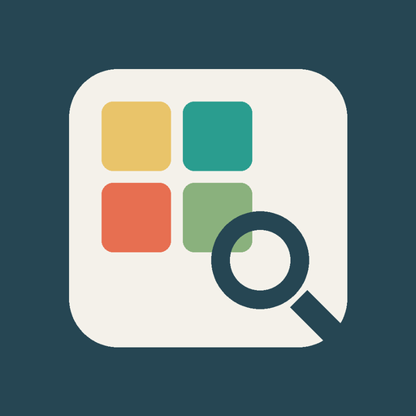

Personal Pin Search
Search and filter Pins saved on my own Pinterest boards with an AI assistant.
What it is
Personal Pin Search is a personal, non-commercial tool built and used only by its developer (Pinterest account linhtrnghoi). I save a lot of design references on Pinterest. This tool helps me quickly find the right ones, for example "light-background infographics" or "roadmap-style cheat sheets", across my own boards.
How it works
- I connect my own Pinterest account through the official Pinterest API (OAuth).
- A small MCP server runs locally on my computer. There is no backend server.
- When I ask my AI assistant (Claude Desktop) to find something, it reads my own boards and Pins through that local server and helps me filter them.
- Results are shown to me with a link back to each original Pin on Pinterest.
What it does not do
- It only reads data. It does not create, edit, save or delete Pins or boards.
- It only accesses my own account, never other Pinners' data.
- It does not store, sell, share or redistribute Pinterest content.
- It does not use Pinterest data to train machine-learning models.
- It is not offered to other users.
Permissions requested
Read-only scopes: boards:read, pins:read, plus boards:read_secret and pins:read_secret for my own secret boards. Access can be revoked at any time in Pinterest settings.
Contact
Truong Hoai Linh · truonghoailinh1995@gmail.com